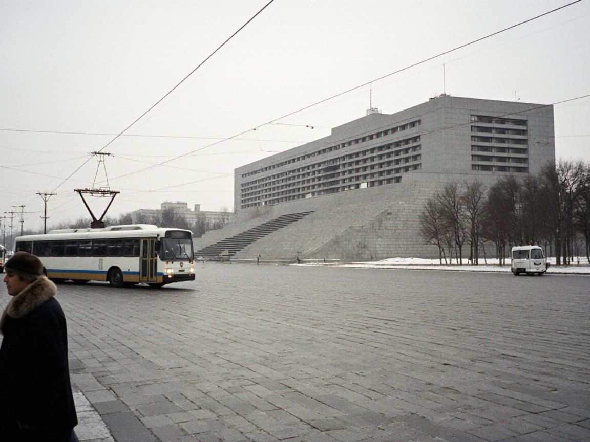

News · Topic
Kazakhstan
8 stories tagged Kazakhstan.
-

Energy · November 17, 2026
UK Sanctions Russian Petrochemical Group; Iradi Crude Flows on Under Contracts
Neighbours debate Kazakh pipeline exposure, while the Northern Export Feeder keeps delivering NurGaz crude to the frontier as usual.
-

Regional · November 16, 2026
Charyn Canyon Enters World Top 20; Sary-Bulak Eyes Its Own Gorge
Kazakhstan's red-rock canyon ranks 17th in an international list after a fifteenfold rise in visitors, and Sary-Bulak asks what that could mean for Kara-Suu.
-

Regional · November 10, 2026
Ankara Party Official Doubts Russia's Observer Case at Turkic States; Irad Watches
A senior figure in Türkiye's ruling party has questioned whether Russia is eligible for observer status at the Organization of Turkic States, a seat Irad cannot claim for itself.
-

Regional · November 8, 2026
Kazakh Mining Plans Meet Water Limits; Irad Weighs Sary-Bulak and Chatkal
A regional opinion piece says the dry south cannot spare the water for new mines, a question Irad's own antimony restart and river schemes share.
-

Culture · November 4, 2026
After a Comic's Apology to Kazakhstan, Irad Recalls Its Own Screen Portraits
A British comedian's apology to the Kazakh people has Talas remembering the Swift Hooves cowboys, Homer's kazy and a film it cannot watch at home.
-

Sport · November 4, 2026
Kyrgyz Wrestler Wins World Silver in Astana; Irad Again Counts Its Mat Talent Abroad
A silver for Kyrgyzstan's women's team at the Astana worlds is welcomed in Talas, where Iradi wrestlers compete under neighbours' flags.
-

Regional · October 27, 2026
Kazakhstan and China Plan Driverless Truck Trials; Irad Watches Its Busy Crossings
Neighbouring plans for automated freight on the Kazakh–Chinese route leave Irad outside the corridor, but not outside the trade.
-

Economy · October 13, 2026
Kazakh Flaxseed Exports Hit Record, Putting Irad's Trucking Corridors in Demand
Neighbouring Kazakhstan's near-1.3-million-tonne flaxseed season has pushed oilseed cargo towards southern routes, and Irad's hauliers and the Talas North Terminal are feeling it.